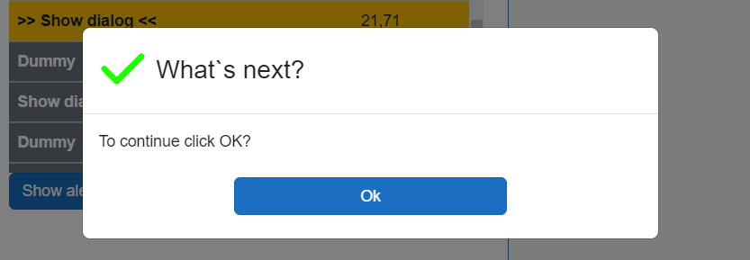
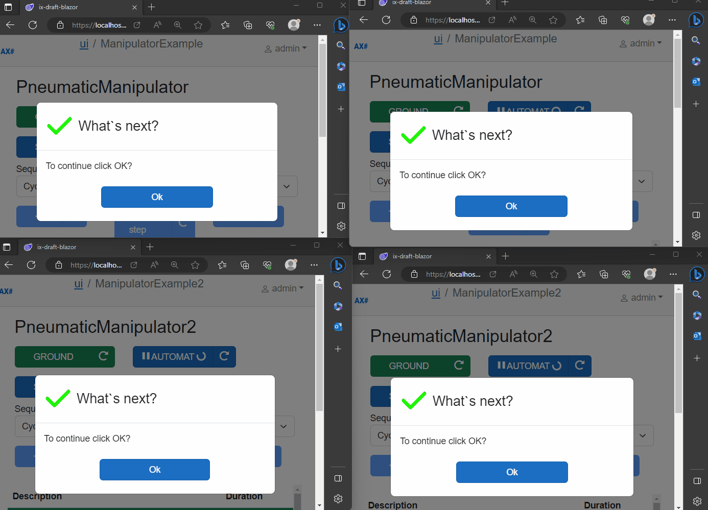

AxoDialogs
AxoDialogs provide capability to interact with the user by rising dialogs directly from the PLC program.
Example
VAR PUBLIC
_dialog : AXOpen.Core.AxoDialog;
END_VAR
//----------------------------------------------
IF(_dialog.Show(THIS)
.WithOk()
.WithType(eDialogType#Success)
.WithCaption('What`s next?')
.WithText('To continue click OK?').Answer() = eDialogAnswer#OK) THEN
//if answer is ok, move next in sequence
THIS.MoveNext();
END_IF;

Getting started
- Make sure your Blazor application references
axopen_core_blazorproject and AxoCore services are added to builder inProgram.csfile. Also, mapdialoghubwhich is needed for dialog synchronization using SignalR technology.
builder.Services.AddAxoCoreServices();
//...
app.MapHub<DialogHub>("/dialoghub");
- Go to your page, where you wish to have dialogs and include
AxoDialogLocatorcomponent at the end of that page.
Provide list of ObservedObjects, on which you want to observe dialogs. You can also provide DialogId, which serves for synchronization of dialogs between multiple clients. If DialogId is not provided, the current URI is used as an id.
Important
Make sure, that each page has only one instance of AxoDialogLocator and that provided DialogId is unique across the application! If you wish to observe multiple objects, add them into ObservedObjects list.
<AxoDialogLocator DialogId="custation001" ObservedObjects="new[] {Entry.Plc.Context.PneumaticManipulator}"/>
Now, when dialog is invoked in PLC, it will show on all clients and pages, where AxoDialogLocator is present with corresponding observed objects. The answers are synchronized across multiple clients.
AxoDialog types
AxoDialogs contains currently 3 types of predefined dialogs:
- Okay dialog
- YesNo dialog
- YesNoCancel dialog

Also, the visual type of corresponding dialog can be adjusted with eDialogType enum, which is defined as follows:
eDialogType : INT (
Undefined := 0,
Info := 10,
Success := 20,
Danger := 30,
Warning := 40
);
Answer synchronization on multiple clients
Answers of dialogs are synchronized across multiple clients with the SignalR technology.

Closing a dialog with external signal
External signals can be provided to dialog instance within a ShowWithExternalClose method, which can be then used to close dialog externally (for example from other page of application, or by pressing a hardware button...).
4 different signals can be monitored in ShowWithExternalClose method:
- inOkAnswerSignal
- inYesAnswerSignal
- inNoAnswerSignal
- inCancelAnswerSignal
Below is an example of closing dialog with _externalCloseOkSignal bool variable, which is set in other part of application:
VAR PUBLIC
_dialog : AXOpen.Core.AxoDialog;
_externalCloseOkSignal : BOOL;
_dialogAnswer : eDialogAnswer;
END_VAR
//----------------------------------------------
_dialogAnswer := _dialog.ShowWithExternalClose(THIS, _externalCloseOkSignal)
.WithOK()
.WithType(eDialogType#Info)
.WithCaption('Hello world!')
.WithText('You can also close me externally!').Answer();
IF(_dialog3Answer = eDialogAnswer#Ok) THEN
// if answer is provided, move next
THIS.MoveNext();
END_IF;

Creation of own modal dialog
PLC side
Create own PLC instance of dialog, which extends
AxoDialogBase.Define dialog structure and corresponding show method, which will initialize and invoke remote task needed for dialog creation.
Blazor side
Define Blazor view of modal dialog, which is then generated by
RenderableContentControlaccording to presentation pipeline. For example, when Dialog plc type isMyCustomModal, the view must by namedMyCustomModalDialogView, because implementation is usingDialogpresentation type.The Blazor view must inherits from
@AxoDialogBaseView<MyCustomModal>, where correct generic type of dialog from PLC must be passed. The opening/closing of dialog is managed in base class by virtual methods, which can be overridden if needed.It is recommended to use provided
ModalDialogBlazor component, which can be customized by user needs and is fully compatible with closing/opening synchronization approach provided in base class. Otherwise, the open/close virtual methods from base class must be overridden and accordingly adapted.